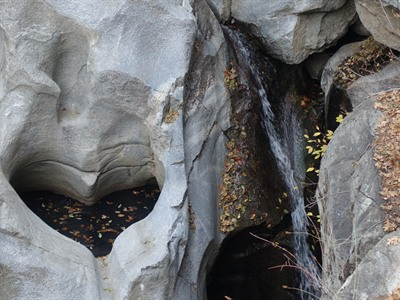
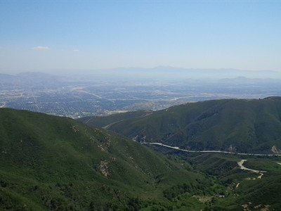
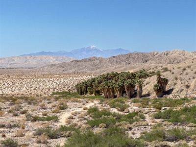
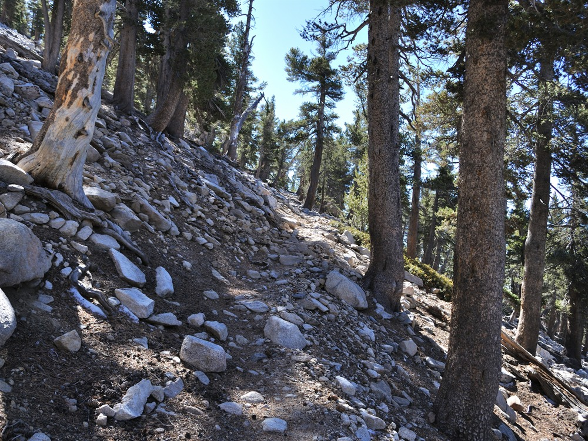
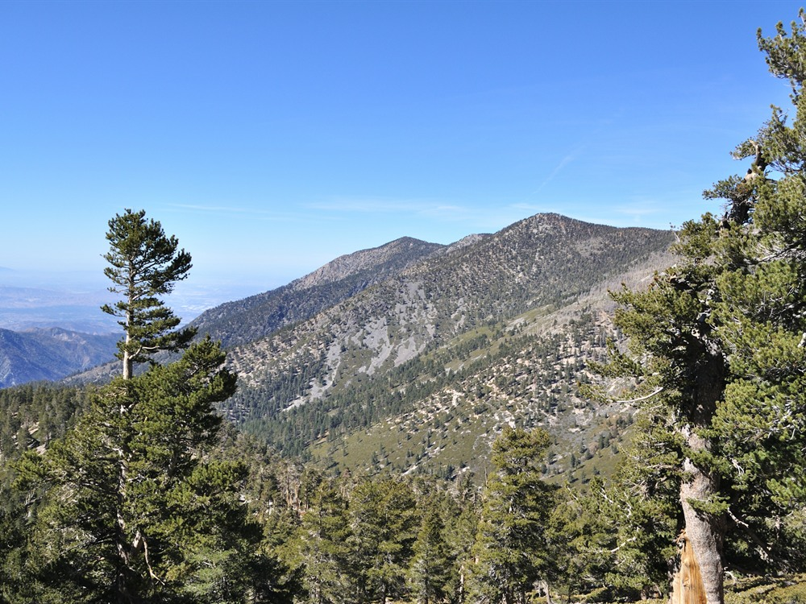
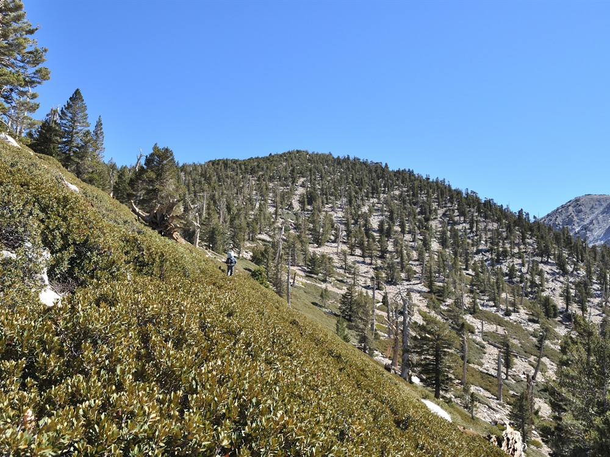
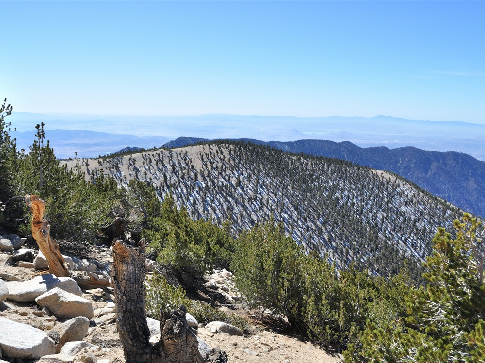
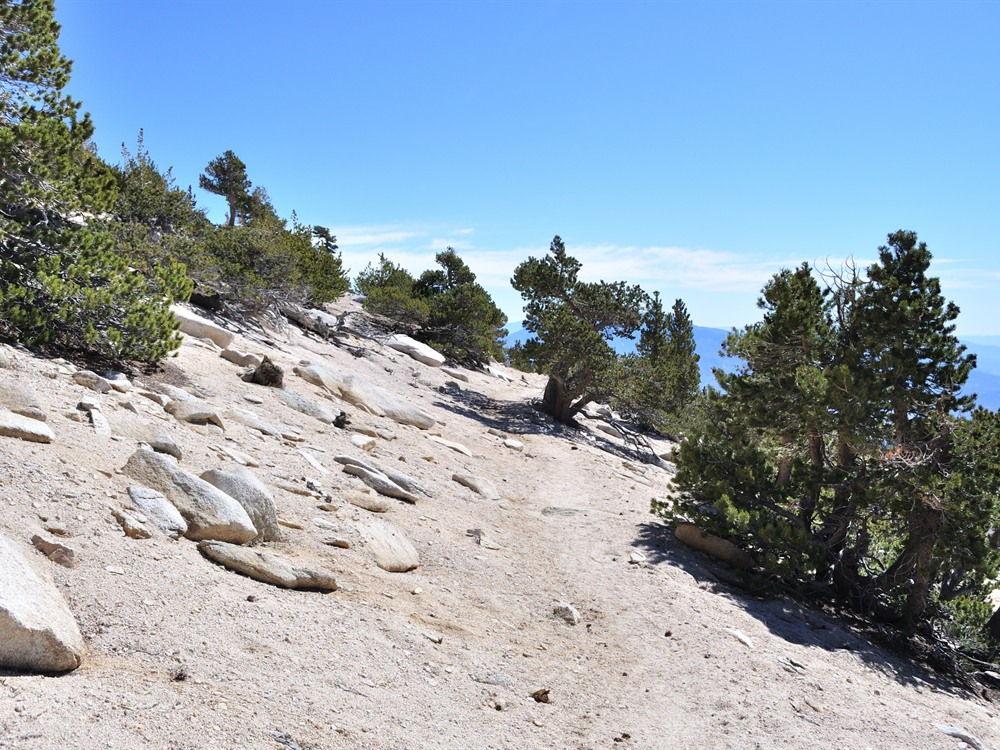
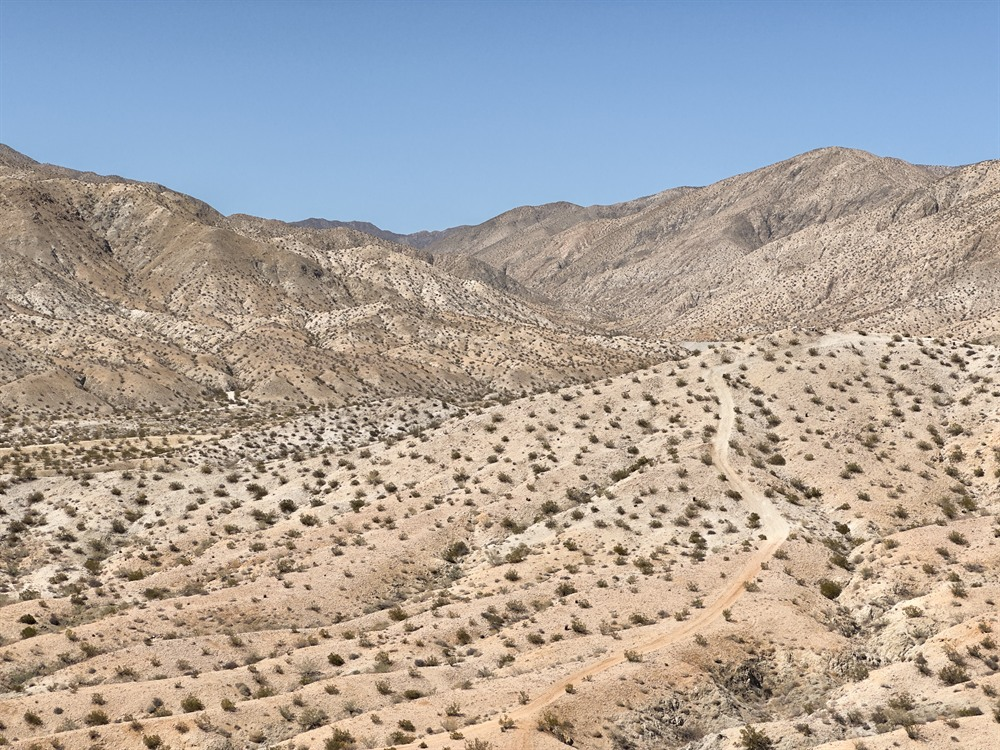
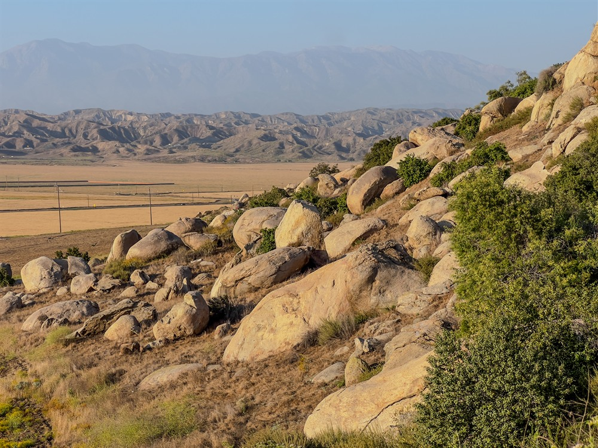

Mountain range offering alpine lakes, pine forests, scenic drives, hiking trails, campgrounds, ski resorts, and year-round outdoor recreation opportunities.
Individual attractions, campgrounds, visitor centers, and recreation sites operate on varying schedules
Some campgrounds, recreation areas, and day-use sites charge separate fees
Adventure Pass may be required at certain National Forest locations
How to Get There
From San Bernardino (25 mi): Take CA-330 north into the mountains, connect with CA-18, and continue through Running Springs into the heart of the San Bernardino Mountains and the Big Bear Lake region.
Overview
The San Bernardino Mountains rise dramatically above Southern California, creating a cool alpine landscape of forested peaks, mountain meadows, and sparkling lakes just a short drive from the Los Angeles metropolitan area. Forming the centerpiece of the San Bernardino National Forest, the range is home to popular destinations such as Big Bear Lake, Lake Arrowhead, Running Springs, and numerous wilderness areas. Visitors encounter towering pines, granite outcrops, and scenic overlooks that provide sweeping views extending across valleys, deserts, and distant mountain ranges. The region's high elevations and diverse ecosystems support an abundance of wildlife and make it one of Southern California's premier outdoor destinations.
Throughout the year, travelers can enjoy activities ranging from hiking, mountain biking, fishing, boating, and camping to skiing and snowboarding at renowned winter resorts. Scenic highways wind through charming mountain communities where historic lodges, local restaurants, and seasonal festivals add to the area's appeal. Whether exploring lakeside trails during summer, viewing autumn colors, watching winter snowfall blanket the forests, or discovering spring wildflowers, visitors will find a landscape that offers recreation and natural beauty in every season.
Things to Do
Visit Big Bear Lake
Big Bear Lake is one of the most popular destinations in the San Bernardino Mountains. Visitors can enjoy boating, kayaking, fishing, paddleboarding, hiking, mountain biking, shopping, dining, and seasonal events throughout the year.
Explore Lake Arrowhead
Often called the "Alps of Southern California," Lake Arrowhead offers beautiful mountain scenery, waterfront views, hiking trails, lakeside villages, and opportunities for relaxation in a picturesque alpine environment.
Drive the Rim of the World Scenic Byway
The Rim of the World Scenic Byway follows portions of California Highway 18 and provides spectacular views of mountain ridges, forested valleys, desert landscapes, and surrounding wilderness areas. Numerous overlooks offer excellent opportunities for sightseeing and photography.
Discover the Mountain Communities
Charming mountain towns such as Big Bear Lake, Lake Arrowhead, Running Springs, Crestline, and Green Valley Lake offer unique shops, restaurants, lodging, and seasonal festivals while serving as gateways to outdoor adventure.
Experience Outdoor Recreation Year-Round
The mountains provide opportunities for hiking, mountain biking, fishing, rock climbing, camping, horseback riding, off-road exploration, and wildlife viewing. During winter, ski resorts such as Snow Summit and Bear Mountain attract skiers and snowboarders from across Southern California.
Visit Forest Waterfalls and Streams
Several trails lead to scenic waterfalls and creeks hidden within the mountains. Snowmelt and seasonal rainfall create picturesque cascades that attract hikers and photographers throughout the year.
Go Wildlife Watching
The San Bernardino Mountains are home to black bears, mule deer, bobcats, coyotes, eagles, hawks, woodpeckers, and numerous other species. The region's diverse ecosystems provide excellent wildlife viewing opportunities.
Enjoy Fall Colors and Winter Snow
Unlike much of Southern California, the San Bernardino Mountains experience distinct seasons. Autumn brings colorful foliage while winter transforms higher elevations into snow-covered landscapes ideal for skiing, snowboarding, snowshoeing, and snow play.
Top Trails
Castle Rock Trail
Length: Approximately 2.7 miles round trip
Elevation Gain: Approximately 800 feet
Difficulty: Moderate
One of the most popular hikes near Lake Arrowhead, Castle Rock Trail climbs through pine forest to a dramatic granite outcrop offering panoramic views of Lake Arrowhead and the surrounding mountains.
Heart Rock Trail
Length: Approximately 1.5 miles round trip
Elevation Gain: Approximately 300 feet
Difficulty: Easy
This family-friendly trail leads to a naturally heart-shaped pool carved into rock by flowing water. It is one of the most photographed natural features in the San Bernardino Mountains.
Cougar Crest Trail
Length: Approximately 5.5 miles round trip
Elevation Gain: Approximately 1,000 feet
Difficulty: Moderate
Located near Big Bear Lake, this scenic trail climbs to impressive overlooks with views of the lake, surrounding forests, and nearby mountain peaks.
San Bernardino Peak Trail
Length: Approximately 16 miles round trip
Elevation Gain: Approximately 4,700 feet
Difficulty: Strenuous
This challenging hike leads to San Bernardino Peak, one of Southern California's iconic mountain summits. The trail rewards hikers with expansive views stretching across mountains, deserts, and valleys.
Aspen Glen to Grand View Point Trail
Length: Approximately 7 miles round trip
Elevation Gain: Approximately 1,500 feet
Difficulty: Moderate to Strenuous
This trail climbs through dense pine forests to spectacular viewpoints overlooking Big Bear Valley and portions of the San Bernardino National Forest.
Deep Creek Hot Springs Trail
Length: Approximately 6 miles round trip
Elevation Gain: Approximately 900 feet
Difficulty: Moderate
One of Southern California's most famous hikes, this route leads to natural hot springs along Deep Creek, where visitors can enjoy scenic river views and geothermal pools.
Sources: U.S. Forest Service San Bernardino National Forest information, including recreational opportunities, hiking trails, scenic drives, camping, wildlife viewing, mountain communities, and year-round outdoor activities. https://www.fs.usda.gov/sbnf
Additional visitor information from Big Bear and Lake Arrowhead tourism resources covering hiking trails, mountain recreation, scenic attractions, outdoor activities, and visitor services throughout the San Bernardino Mountains. https://www.bigbear.com
This article uses material from the Wikipedia articles and official tourism pages for the San Bernardino National Forest, which are released under the Creative Commons Attribution-Share-Alike License 3.0.
Featured Locations and Trails
-400.jpg)
Dough4872, CC BY-SA 4.0, via Wikimedia Commons; Image Size Adjusted

Big Bear Lake
Reservoir, located in the San Bernardino Mountains, is a snow and rain-fed lake, having no other means of tributaries

Dough4872, CC BY-SA 4.0, via Wikimedia Commons; Image Size Adjusted
Castle Rock Trail
Scenic mountain trail leading to a dramatic granite summit with panoramic views of Big Bear Lake, surrounding forests, and the rugged peaks of the San Bernardino Mountains.

Dough4872, CC BY-SA 4.0, via Wikimedia Commons; Image Size Adjusted
Heart Rock Trail
Popular forest trail leading to a naturally heart-shaped waterfall pool surrounded by granite cliffs, pine woodland, and scenic mountain landscapes.

Dough4872, CC BY-SA 4.0, via Wikimedia Commons; Image Size Adjusted
Rim of the World Highway
Scenic mountain highway traversing forests, lakes, overlooks, and historic communities while providing sweeping views across the San Bernardino Mountains and surrounding valleys.

Dough4872, CC BY-SA 4.0, via Wikimedia Commons; Image Size Adjusted
San Gorgonio Mountain
Southern California's highest mountain offering alpine scenery, rugged wilderness, challenging hiking routes, and sweeping views across mountain ranges, deserts, and valleys.

.jpg){kind=link}

.jpg){kind=link}

_-_Little_Charlton_Peak_(1).jpg){kind=link}

_-_Dobbs_Peak.jpg){kind=link}

.jpg){kind=link}


